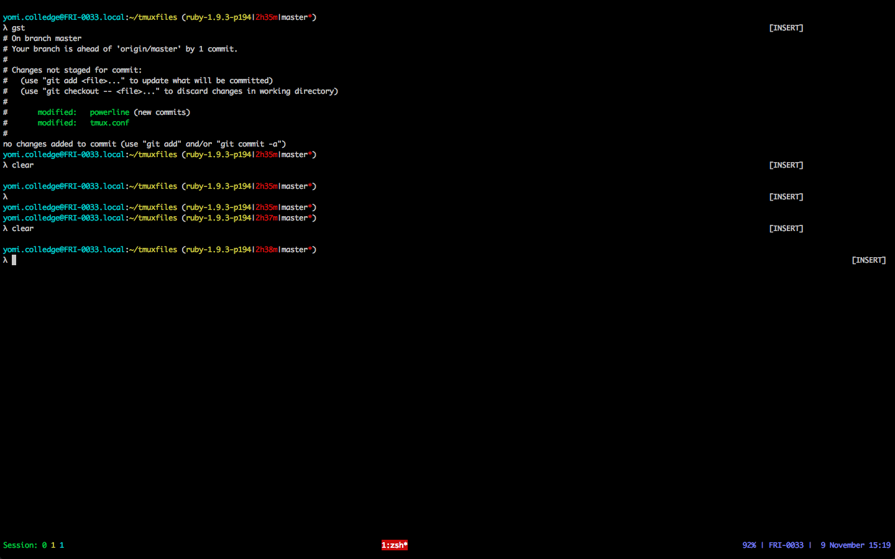
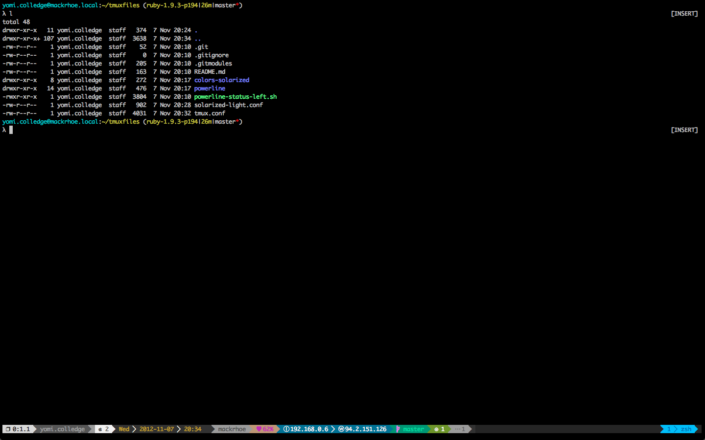

Over the next couple of weeks I’ll be focusing on my terminal setting and improving my knowledge of zsh and git. I’d like to tweak my tmux status bar so that it isn’t so vanilla as well as displaying more information. Once that is done I’d like to improve my terminal so that I can use my vi binding within irb, pry, and other REPLs.
I’ve recently discovered tmux-powerline so today I’ll be customising my zsh with tmux-powerline. Prior to this discovery my status bar looked pretty much like the vanilla version that comes with Tmux.

homepage: http://github.com/erikw/tmux-powerline
Today I want to put some time aside to customise my terminal a little bit more. The one thing that has come to my
attension recently is tmux-powerline.
Note
Display image of my status bar before setting up tmux-powerline
The generic tmux status bar is ok but I prefer a little bit more control and flexibility as to what is shown there and
how. This is where tmux-powerline is cool. I’d like to have quite a bit of information accessible to me at a glance so
the ideal setup for me will tell me the following things:
- The machine I am currently working from
- My IP addresses
- What tmux pain and session I am currently in
- Emails I have unopen
- Battery status
Git
- Branch I am currently on
- Need to pull
- Need to push
- List of sessions
Initially I just threw everything together and dumped tmux-powerline and the solarized theme into my home directory. I don’t particularly like this and create a tmux repository.
So firstly I’ve had to fork my own version of tmux-powerline mainly so that I could quickly customise my own status
bar but also to that I can add some extra functionality to the tool later on down the road when I get some playtime.
I’ll be creating a new directory called tmux which will store all my tmux customisations. That include the tmux
solarized theme and my tmux configuration file. I’ll then symlink .tmux.conf to my new repository.
git init git submodule add git@github.com:baphled/tmux-powerline.git powerline mv ~/.tmux.conf tmux.conf ln -s tmux.conf ~/.tmux.conf
The main changes needed where to disable the right status bar fully so my panel list can live there and to include and customise the left bar, where I’d like most of my information to be stored.
I made a quite a few tweaks to my tmux conf file which you can see here.
I don’t really want to use the right side status bar at the moment, though this may change at some point down the road. So I want to make sure that the right side status bar doesn’t display, I do this by making the status empty.
The one things that annoys me about the current state of tmux-powerline is that the status bars generally need to be
customised but there is no real way of doing this at the moment without having to fork the project and make it my own.
This is cool and everything but keeping things up to date can become a pain.
So in this case I’m going create my own status file, basically copying my current left statusbar and move it to my repository.
The first two parts of my customised status bar are actually done by hand, though it was a cool things to work out at
the time I should create what tmux-powerline calls segments. There is already one to display the session name and pane
number but I want to customise it to look like how I currently have it.
As I already have a forked version of the repository it is easy enough to make this change and remove prerolled version. Before I do that though I should add a segment for displaying my current username.
Now I have powerline setup for both tmux and vim :)

I’ve played around with a few color setting over the past few months but solarized has to be the best so far. Today I’ll be setting it up in iTerm2, tmux and vim.
So I’ve been using the same colour scheme for a while and it’s and and all but Solarized seems to be the best, visually, so I’ve decided to set up Solarized as my main color scheme.
I’ll start this off will setting up my Mac. The settings may be slightly different for *nix based machines but I’ll tackle that in another entry.
TODO: Add reference to previous image
For now I’ll start with Iterm2. My colour settings are quite basic as you can see from the previous image.
So first off I needed download the iterm solarized color settings and store them in my dotfiles. I stored the settings
in ~/colors/iterm2/solarized_dark.itermcolors
I then needed to import this into iTerm2.
Once this is complete all that was needed was select the new plugin.

Finally iTerm2 is now setup with Solarized Dark :)
The next step is get my Vim setup with Solarized also.
This was pretty straight forward. I simply had to add the vim-solarized plugin into my dotvim files (add link to change here).
I then had to change the colorscheme to solarized and everything was good to go. The next time I started Vim Solarized was setup. :)

There was one thing was I couldn’t do without, and that was my column width colour. I found a code snippet that fitted
the purpose so I add that to my ~/.vimrc file.
I could possibly improve this a little bit more but for the time being it’ll do.
Now it’s time to get tmux setup with Solarized Dark also. I already had a bunch of custom color settings but I’ve decided to do away with those and primarily use Solarized. First off I removed the existing colour settings and downloaded the tmux colour scheme from https://raw.github.com/seebi/tmux-colors-solarized/master/tmuxcolors-dark.conf.
TODO: Display snippet of the change.
This was then copied to my tmuxfiles repositories and linked to from with my tmux.conf file.
Once that was done I simple ran the following command to update my current session.
source ~/.tmux.conf
Now that everything is setup. My setup now looks like this:
So I’m almost complete but I’m not quite happy about the colouring of the directory names, or shall I say lack of colour.
There is a project that helps to change this (https://github.com/seebi/dircolors-solarized). I’d like to keep up to
date with this project but easily switch out the settings if needed. I’ll create a colourschemes directory that I will
keep my colour settings in. I then linked the desired colour scheme for dircolors ln -s
~/colour_schemes/dircolors.256 ~/.dir_colors
I also had to install coreutils to get access to the dircolours command.
brew install coreutils --default-names
Once this was installed I could then add the following code snippet to ~/.zshrc.
I’d like to tweak my colour setting further but I’ll leave this for now while I get used to the latest changes.
So there has been quite a few changes to tmux-powerline over the past few months. One of the major changes is it is
now a lot easier to customise your powerline configuration.
I’d like to spend some time integrating these new setting into my current setup and possibly thinking about other segments that I can create once it’s done.
So today is the day that I actually get around to updating tmux-powerline. As mentioned in my previous entry it was a bit of a pain to customise tmux-powerline, mainly due to the fact that you had to create a new fork and customise the status bars to how you wanted them to be.
This has all changed quite significantly over the past month or so so I need to make sure that I don’t break anything and keep my setup as close to the original as possible.
The first step was to update my fork of the project with the latest changes and get that working as closely as possible to my current setup. One of the nice things I like about the latest update is that there is now no need to fork the project to customise the feel of it. You simply create generate a new theme, customise it and then move it to a separate directory, in my case I’ve put it under themes within the tmuxfiles project. I also had a custom segment that I used to display who I am currently logged in as. I had to remove this from my forked repository, tweak it (as the script structure had changed) and put that in a new directory (segments) within the tmuxfiles project. These changes were really needed and make the project as a whole a lot nicer to work with.
I then had to tweak my tmux settings to point to the updated forked version of the repository. This way I can test the setup locally without having to commit to anything, pun intended. This was as easy as changing where tmux-powerline is found and playing around with the settings until it was about right.
As before I still don’t want a right status bar, mainly as my status list will populate this part of tmux-powerline. So effectively I left that pretty much as it was. I spend quite a bit of time getting the colours right and tweaking the ordering of segments so that it looked better than before but that didn’t take that long to do.
As a whole I quite like the recent changes to the project, especially the ability to overide where themes and segments are found. This means that there will is no more having to merge my changes with the project and also allows me to be more creative without being concerned that things will change dramatically without me noticing.
Though this is setup quite nicely at present, there is talk of moving tmux-powerline to the powerline project, would could be interesting. It kind of makes sense having a central powerline repository. But for now I won’t worry about that happening but I am sure there will be yet another entry explaining those changes and how I ended up integrating that into my current setup.
I’ve been having issues with installing my dotfiles on new machines, mainly as there are quite a few dependancies and git submodules. I can get around this by creating rake tasks that allow me to install these dependancies and keep my submodules up to date.
The first task I want to capture is installing my dotfiles. To do this I need to take the following steps:
- Make sure I don’t have the files already installed
- Install brew (if running OSX)
- Install rvm with ruby
- Clone dotfile repository
- Recursively initialise and update all dotfiles
- Install gems